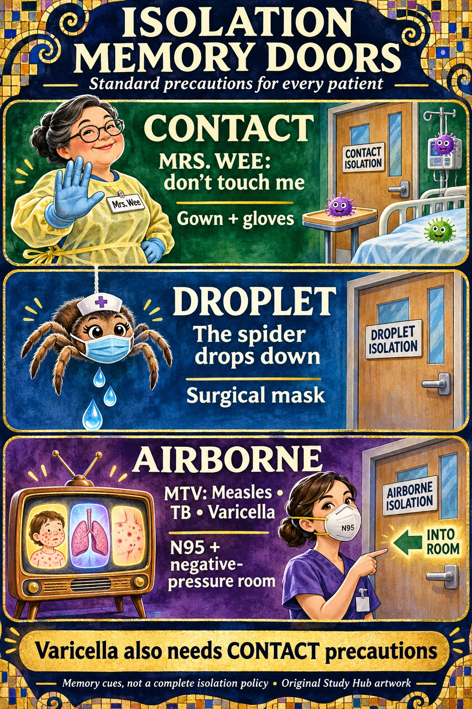

🧠 Quick study review · Foundations • Pediatrics • Med-surg • Pharmacology
ATI last-minute helpers
Memory cues for precautions and allergy questions, with the exceptions that keep the shortcuts accurate. Student-shared mnemonics; this is not an official ATI answer key.
🧤 Three isolation memory doors

An exact Simple Nursing handout for these isolation mnemonics or the vaccine/ingredient-allergy comparisons was not found in the current library. The original memory visual and clinical sources are provided here.
CONTACT: “MRS. WEE—don’t touch me”
- M: MRSA.
- R: RSV.
- S: Scabies; impetigo.
- W: Wounds with uncontained drainage.
- E: Enteric: C. diff, rotavirus.
- E: Eyes: acute viral conjunctivitis.
Picture: Mrs. Wee’s gown and gloves block contact.
DROPLET: “SPIDERMAN drops down”
- S: Scarlet fever / streptococcal pharyngitis in children.
- P: Pertussis; parvovirus B19.
- I: Influenza.
- D: Pharyngeal diphtheria.
- E: Hib epiglottitis.
- R: Rubella.
- M: Mumps.
- A: Adenovirus pneumonia: add contact.
- N: Neisseria meningitidis: meningitis or sepsis; Hib meningitis also needs droplet.
Sepsis alone does not define isolation. Identify the organism. Not every meningitis needs droplet.
AIRBORNE: “MTV”
Measles · pulmonary/laryngeal TB · Varicella.
Varicella and disseminated zoster: airborne + contact. “Herpes” alone is too broad; ordinary HSV is not an airborne diagnosis.
The lists are memory prompts, not complete disease/duration rules. CDC organism-specific precautions ↗
💊 Allergy clues: what the shortcut really means
Ask which substance, which reaction, and how severe. An association is a reason to assess—not proof of an allergy.
🥑 Avocado, banana, kiwi ↔ latex; spina bifida → latex risk
These fruits can cross-react with latex. A fruit allergy does not automatically diagnose latex allergy. People with spina bifida have increased latex-allergy risk; plan latex-safe care and document the actual reaction.
Spina Bifida Association guideline ↗💉 Neomycin & gelatin → check the exact vaccine
- Neomycin: MMR and some other vaccines contain traces. Prior anaphylaxis needs specialist evaluation; contact dermatitis alone is not the same contraindication.
- Gelatin: Present in some MMR and varicella formulations. Evaluate true gelatin anaphylaxis before a gelatin-containing vaccine.
- Zoster correction: Do not apply an older live-zoster shortcut to every shingles vaccine. Shingrix does not list gelatin in its ingredients.
🥚 Propofol ≠ automatically forbidden with egg allergy
Propofol contains egg lecithin and soybean oil. Food allergies target proteins; egg/soy allergy alone is not a reason to avoid propofol according to AAAAI. A previous reaction to propofol itself needs evaluation. Review the actual reaction and product labeling with the anesthesia team.
AAAAI: egg/soy allergy and propofol ↗🦐 Shellfish ≠ “iodine allergy” ≠ contrast allergy
Shellfish allergy does not specifically predict an iodinated-contrast reaction. Iodine is not the allergen. Ask about a previous contrast reaction, the agent used, and what happened; communicate that history to radiology.
AAAAI: seafood and contrast fact sheet ↗🥛 Milk → some dry-powder inhalers
Severe milk-protein allergy is a contraindication to certain lactose-containing dry-powder products, such as Advair Diskus, because the lactose can contain milk proteins.
This is different from lactose intolerance. It does not apply to every inhaler—check the specific product.
Advair Diskus official label ↗Allergy & cough topic review ↗✓ Three quick checks
Sepsis automatically means droplet precautions?
No. The suspected organism and site determine precautions. Meningococcal sepsis needs droplet; “sepsis” alone is insufficient.
Review the isolation mnemonic ↗Shellfish allergy automatically prohibits CT contrast?
No. Ask about actual prior contrast reactions. Shellfish allergy is not an iodine allergy.
Review contrast allergy ↗Is lactose intolerance the same as severe milk-protein allergy?
No. The dry-powder inhaler warning concerns milk proteins and the particular product.
Review milk and inhalers ↗